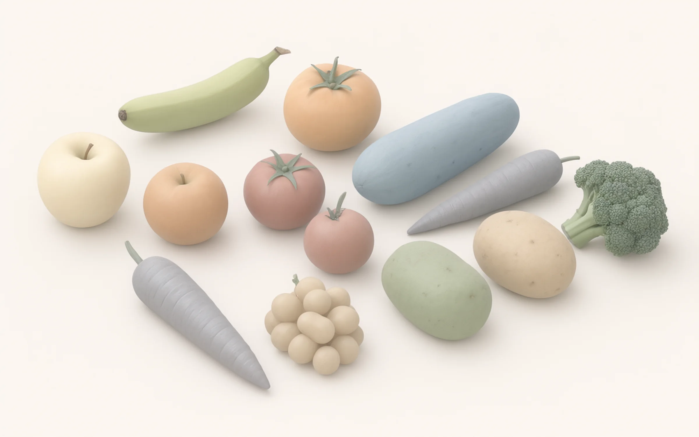
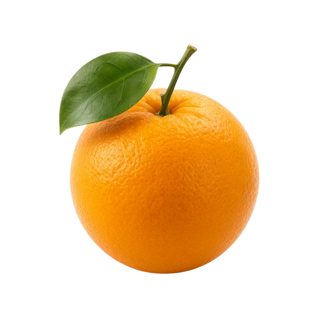
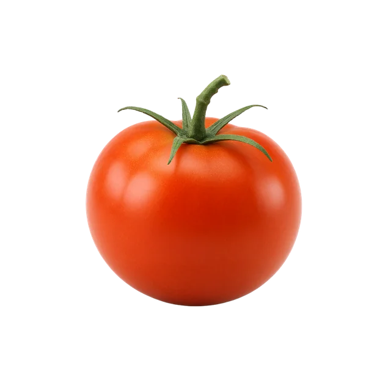
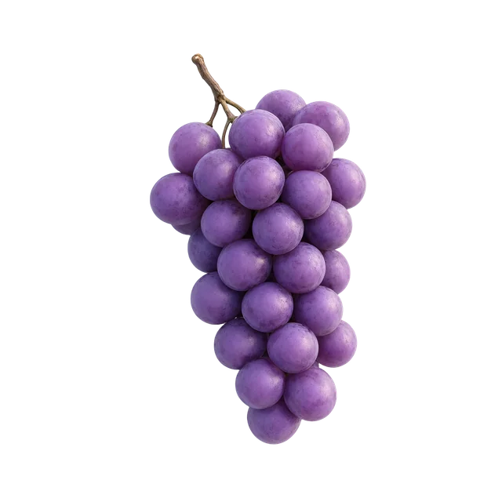

厨房
家居
服装
食物
身体部位
美妆与护肤
出行
Produce
果蔬区
场景
卡片
女声
男声

指到或点一下物品
再听一次
apple
banana
orange
tomato
cucumber
grape
potato
broccoli
apple
苹果
banana
香蕉

orange
橙子

tomato
西红柿
cucumber
黄瓜

grape
葡萄
potato
土豆
broccoli
西兰花
食物
Dairy 乳品面包 ›